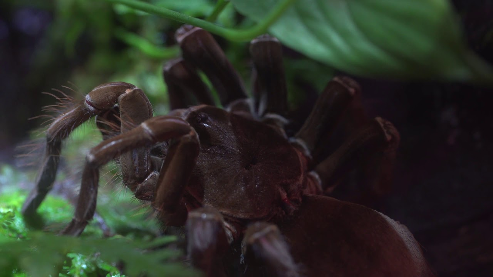
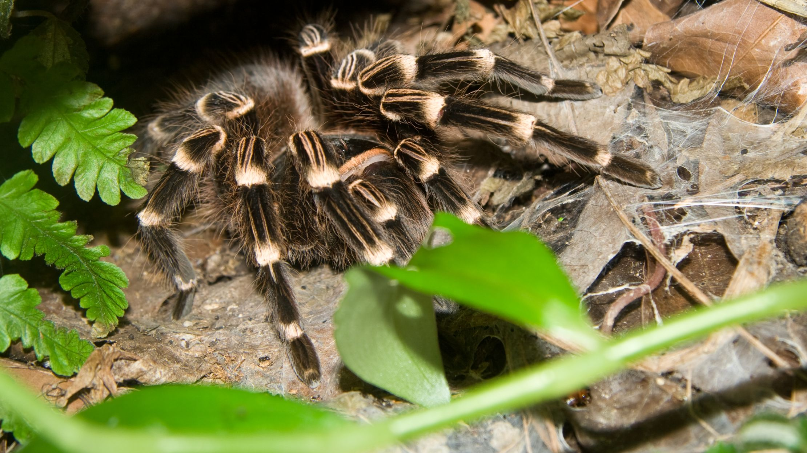
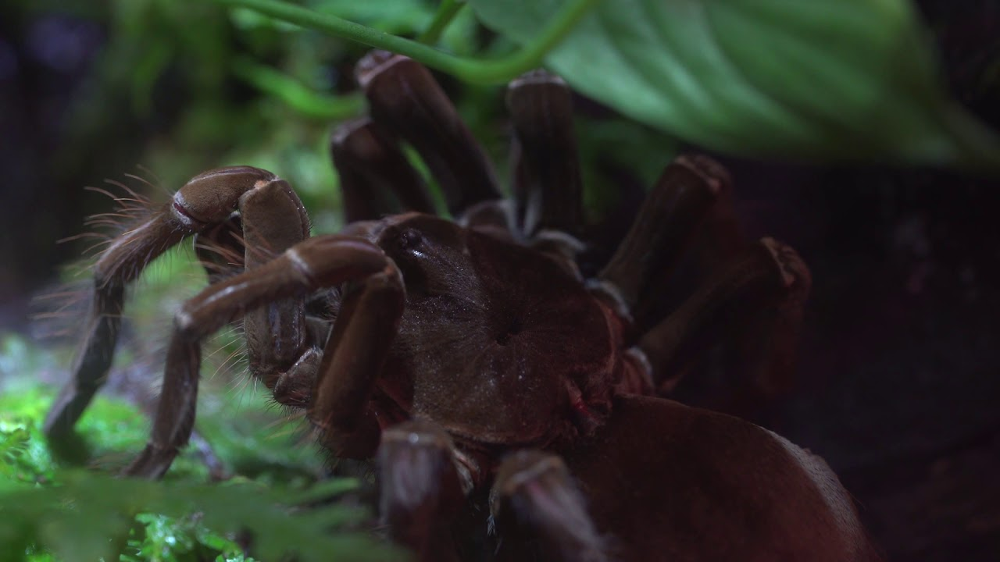
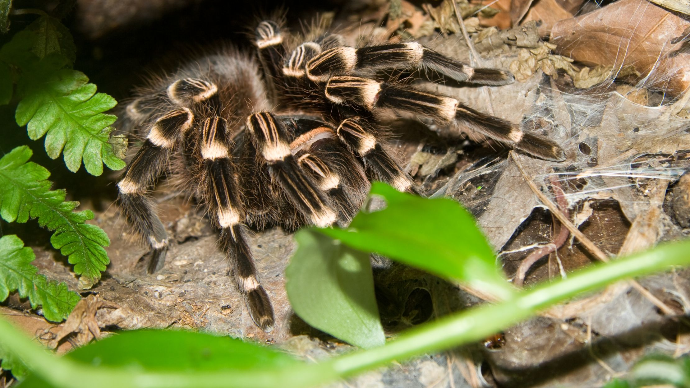
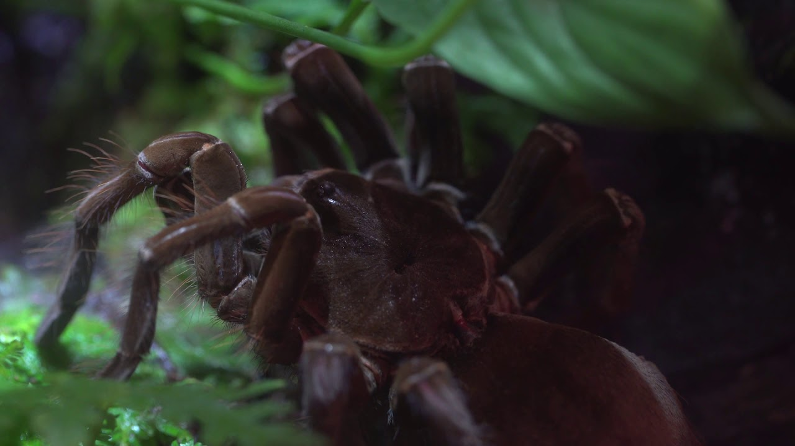
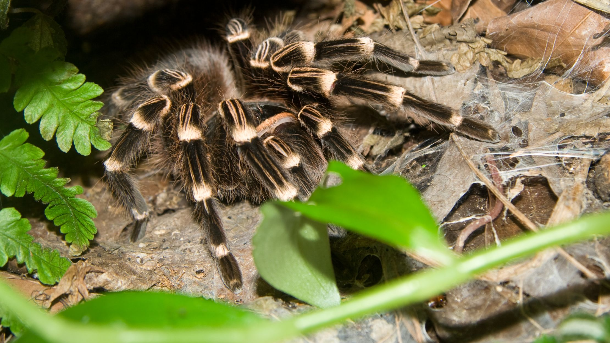
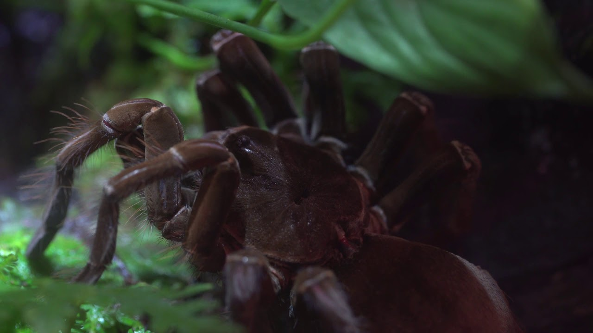
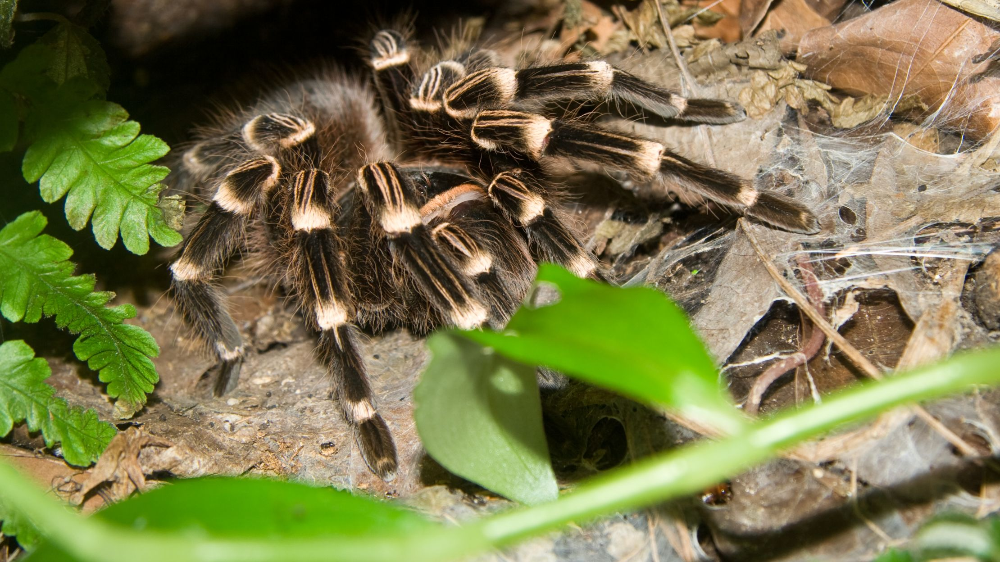

ARTHROPOD
STABLE
SOUTH AMERICA

lives in the rainforest in silk-lined burrows and under rocks and roots.

These huge spiders don't usually eat birds. Their usual prey are larger insects, neighbor spiders, frogs, and salamanders. Once in a while one might catch a lizard, mouse, snake, or a bird.

Like other tarantulas, these spiders defend themselves with hair-but not just any hair. With its hind legs, an alarmed spider flicks hairs from its abdomen. These hairs are called urticating (ER-tick-ate-ing) hairs. They are barbed, and they lodge in a would-be attacker's eyes, mouth, or face. In humans, these hairs can be painful and itchy. Good thing tarantulas only flick them when threatened.
These big spiders don't weave round webs to catch prey. They hide in underground burrows during the day. At night, they come out to hunt among the leaf litter. The spider's long fangs inject venom that kills its prey. The next step is to start digesting its food-even before food is in the spider's mouth. The spider injects prey with digestive juices and sucks up the liquified prey.
A female Goliath bird-eating spider lays about 70 eggs. She guards her eggs, keeping them safe in a sac she spins of silk. Spiderlings (baby spiders) hatch from eggs. Most spiderlings are tiny, but not these. They are nearly 0.75 inches long. Spiderlings hang around for a two or three weeks before they go off on their own. They eat a lot and grow fast.